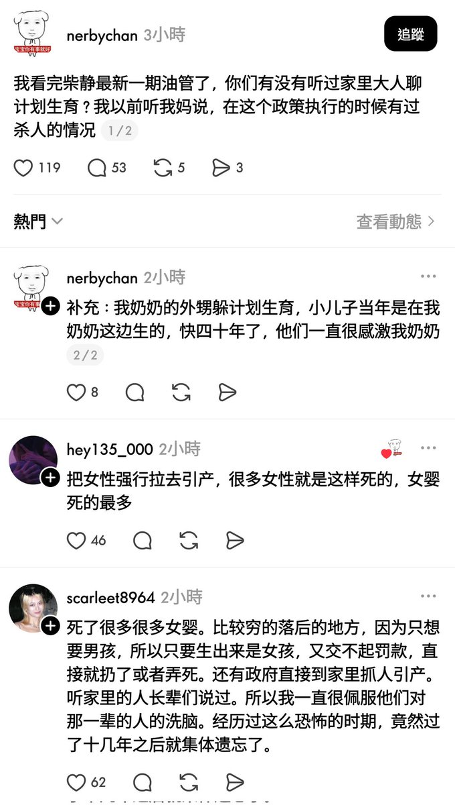
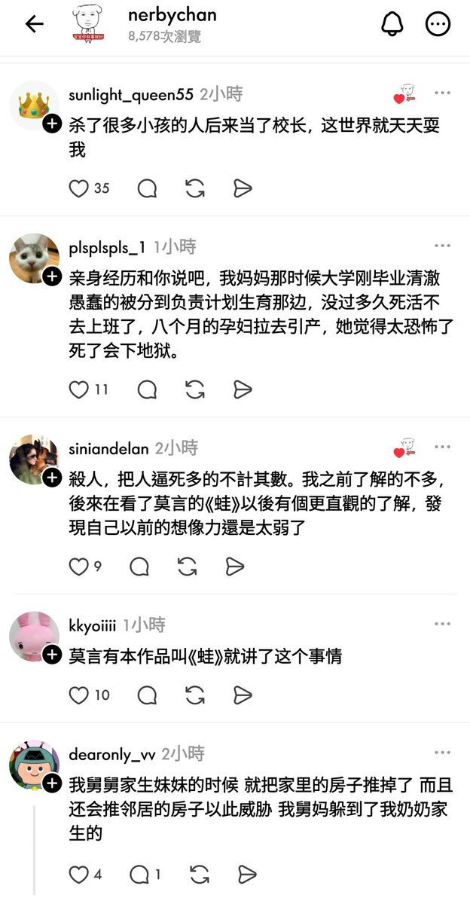
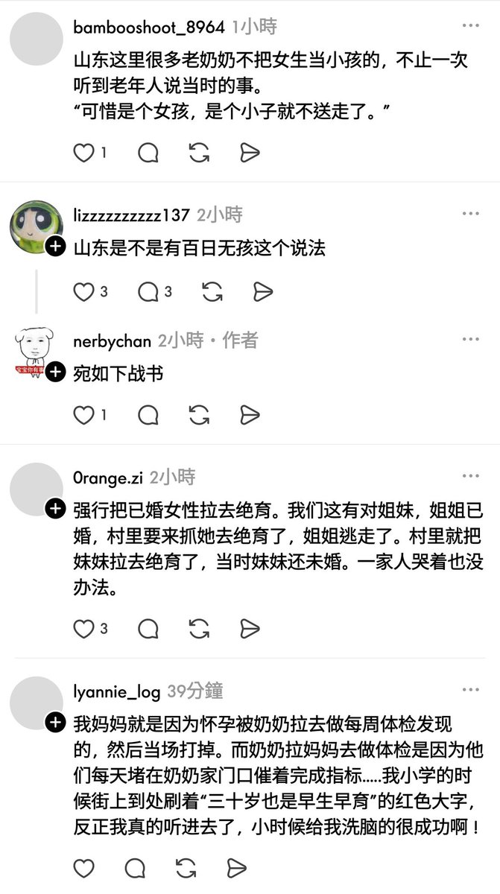

The Raven in the Rain🏳️🌈
@Raincandy_1937
如果本世纪我们还看不到这个政权崩塌，那人类走向灭亡也是早晚的事情



红袍猫后Penny
@Xianzhong_1953
对墙内真实状况有所了解，而且没有完全丧良知的话，很难不抑郁。
正因为如此，墙内很多家长有意无意地配合了官府的虚假宣传与洗脑，不对孩子说出事实，或因PTSD而隐瞒真相。。
于是很多小孩在谎言中活到出身社会，逐渐被铁拳殴打后，才第一次明白墙内世界，这时候极容易因为彻底幻灭而极度抑郁或自杀。 https://t.co/dMresZSDzt